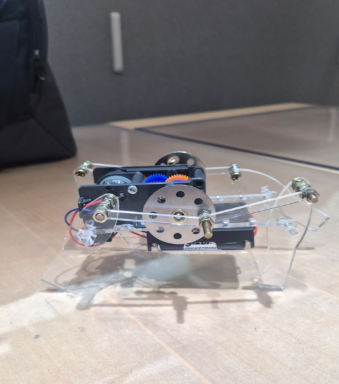

정밀한 기계적 해석과 스마트한 제어의 융합
어플라이드 머티리얼즈의 혁신을 잇는 장비 엔지니어, 조윤기입니다.
IDENTITY
- Name 조윤기
- Univ 동양미래대학교 로봇소프트웨어과
- Core 하드웨어의 물리적 견고함 + AI/클라우드 제어 편의성
- Vision 기구 설계 역량과 소프트웨어 제어 역량을 겸비하여, 오차를 보정하고 노이즈를 통제하는 'T자형 실무 인재'
CORE TECH STACK (학점)
초급부터 고급까지, 현장 투입을 위한 10단계 징검다리
반도체 물리 이론부터 장비 제어, 자동화 통신 시스템까지 10개의 마이크로디그리 과정을 수료했습니다.
교과형 역량
반도체 및 회로 기초 설계
- 반도체기초: 반도체 소자의 물리적 특성 및 기초 동작 구동원리 이해
- 반도체공학: 공정 프로세스 8대 공정 및 장비의 단위 구조 학습
- 집적회로설계관련기초: 미세 회로 설계의 기반 및 아날로그/디지털 신호 처리의 기본기 확립
교과/자격 연계
시스템 제어 및 환경 안전 관리
- 반도체설비제어교과: 모터 드라이버 및 센서 연동, 장비 파라미터 미세 튜닝 제어
- 반도체설비유지보수교과: 예방 정비(PM) 절차 및 하드웨어 트러블슈팅 방법론
- Solidworks CAD 해독: 3D 기구 도면 분석을 통한 파트 역설계 및 리뷰 역량
- 위험물/산업안전: 반도체 클린룸 화학물질 다룸 및 설비 안전 관리 지식
- 자격증 연계 특강: 전공 자격 취득을 통한 현장 실무의 이론적 토대 강화
몰입형/실무 성과
현장 맞춤형 자동화 로보틱스 적용
- 두산로보틱스 협동로봇 교육: 매니퓰레이터 티칭 조작 및 주변 안전 시스템 연동 통제
- PLC 제어 실무: 래더 로직을 활용한 시퀀스 동작 제어 및 설비간 I/O 통신 최적화
- 현장 실무 집중 교육: 데모 장비를 활용한 PM 실습 및 에러 로그 원인 분석
- 산업체 인사 참여 교육: 현직 전문가의 피드백을 수용하여 현장 문제 해결 능력 체화
견고한 하드웨어 토대 위에 정밀 제어를 구현하다
Project A 정밀 기구 설계 및 전자 시스템 구축
기구 설계 최적화
'기계제도' 및 'CAD기초'를 통해 조립 공차를 최적화하고, 가속도/저크 제어를 통해 진동을 억제하여 MTBF(평균 고장 간격)를 연장하는 메커니즘 설계 지식.
신호 무결성 및 고정밀 제어
'전자회로' 지식을 바탕으로 임피던스 매칭을 적용해 신호 간섭(Noise)을 최소화. 모터 및 센서 연계 폐루프 제어로 위치 오차 실시간 보정.
실용 기구학 (Practical Kinematics)
링크와 조인트의 운동(위치, 속도, 가속도)을 강체 기반으로 분석하여, 원하는 메커니즘과 기계적 움직임을 정밀하게 설계 및 구현하는 응용 역량.
로봇 자동화 핵심 프로그래밍
C/C++: 모터 구동 등 하드웨어 밀착형 실시간 제어
C#: 윈도우 기반 장비 UI 및 제어 시스템 운영
Python: 데이터 처리 및 AI 모델 연동
세 언어의 학습을 통해 설비 자동화에 필수적인 풀스택 제어 지식을 확보.
Project B 4족 보행 로봇 (캡스톤 디자인)

- 팀워크: 브레인스토밍으로 조기 소통 장벽을 허물고 0에서 1을 만드는 백지상태 설계를 완수. (조윤기: 서기 100% 진행)
- 기구학 적용: 크랭크 메커니즘과 복합 링크 구조를 통해 모터의 회전 운동을 다리의 보행 운동으로 변환.
- 산학 멘토링: 메이커리언 석기환 대표 등 피드백을 도입, 액추에이터 토크 부족 등 한계 극복.
시스템 지휘자(Architect)의 시야로 장비 유지보수의 미래를 그리다
산출물 기반 고장 예측
에러 로그 데이터와 메커니즘 녹화물 등 멀티모달 데이터를 AI 모델이 학습해 고장 전조 증상을 파악하는 예지 보전 시스템 제안.
클라우드 연동 부품 관리
Next.js + Firebase DB를 연동해 소모성 파츠 수명을 실시간 동기화하고, 최적의 교체 시기를 알림으로써 Downtime 최소화.
트러블슈팅 AI 챗봇
복잡한 장비 매뉴얼과 오류 코드를 Gemini API (RAG)에 임베딩, 태블릿에서 대응 절차를 즉각 브리핑하는 현장 엔지니어 어시스턴트.